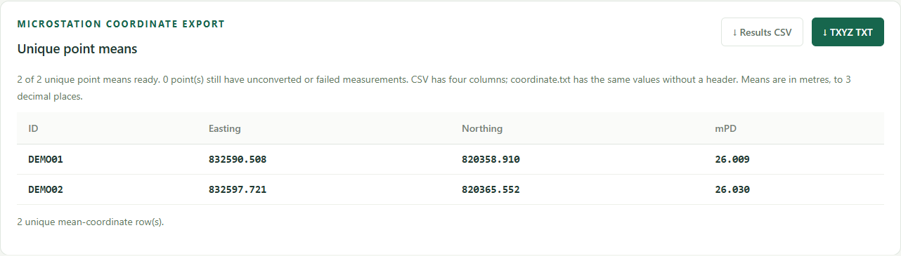

User guide
GNSS → HK1980 coordinate converter · Anthony Wong · v1.1.0
From receiver TXT exports to unique-point mean coordinates for MicroStation.
1. Open the website
Extract the ZIP first. On Windows, double-click start.cmd and keep its server window open. It opens http://127.0.0.1:8080. Use Node.js 22 or later; no package installation is needed. On macOS/Linux, run npm start in the extracted folder and visit the same address.
Opening index.html directly supports import, conversion and point overlays. Use the local server for the OSM background. If port 8080 is busy, stop your earlier server or set a different PORT before running node server.js.
2. Check the conversion direction
Input: WGS84 latitude, longitude and ellipsoidal height in metres.
Output: HK80 / HK1980 Grid Easting and Northing, plus height in metres above Hong Kong Principal Datum (mPD).
The app uses Elevation for ellipsoidal height and ignores a separate Height field. Confirm the receiver's height datum: existing mPD/orthometric height must not be supplied as ellipsoidal height. Coordinate values alone cannot identify their datum.
3. Choose a format and import
Drag in .txt, .csv or .tsv files, or click Browse. Required headers are Point name, Latitude, Longitude, Elevation. Column order is flexible; Date and Time are optional.
- Auto: plain numbers are decimal degrees. Separated DMS such as
22°19′20.064″,22 19 20.064or22:19:20.064is normalized locally. - Decimal degrees: decimal angles only; separated DMS is rejected.
- DMS: complete degrees, minutes and seconds are required.
- Packed DMS: explicitly interprets
22.1920064as22°19′20.064″. Auto cannot distinguish that number from a decimal-degree angle, so select this mode yourself.
N/S and E/W markers can prefix or suffix angles. Minutes/seconds must be below 60. Wrong hemisphere letters, contradictory signs, incomplete angles and coordinates outside Hong Kong are rejected with file/line details. A format change applies to later imports; clear and reimport to reinterpret existing data.
Supported separators are comma, tab and semicolon. UTF-8 and UTF-16 with a byte-order mark work. Each file is limited to 20 MB. Accepted ranges: latitude 22.13–22.57°, longitude 113.82–114.48°, elevation −1000–10000 m. Importing a file again adds its readings again.
Try samples/demo_decimal.txt (six synthetic readings of two points), or samples/demo_dms.txt (two DMS forms of the public manual example). These are demonstrations, not field measurements.
4. Review groups and counts
SC43.1, SC43.2, SC43.3 share unique point ID SC43. Only a final dot followed by digits is removed; IDs are case-sensitive. AREA.SC43.003 becomes point AREA.SC43, measurement index 003.
The page distinguishes unique points from imported measurements. Expand a point, use Expand all / Collapse all, or select All measurements. Same-named readings from different files are retained separately. Measurements CSV/JSON preserves each original name, group ID, unique Record ID, source file/line and recorded time.
5. Map and collection playback
The map shows every accepted measurement and the full bounding rectangle, across all table pages. Fit all points restores the survey extent. Rejected rows are excluded.
Play collection reveals readings one by one. Adjust the delay, pause/resume, replay or Show all points. The orange ring highlights the current reading; the readout gives its original name and collection time.
When every reading has valid Date (YYYY-MM-DD) and Time (HH:mm:ss, optionally fractional seconds), playback sorts across all files by collection time. Equal timestamps keep import order. Otherwise the app explicitly uses file/import order. No missing dates are inferred or timezones converted. Delay is fixed per reading and does not reproduce actual time gaps.
6. Convert all measurements
Click Convert with LandsD. The app makes two requests at a time; an individual request times out after 30 seconds. Stop conversion retains completed results. Convert remaining resumes or retries pending/failed readings.
Each reading is converted individually before averaging. Expand a group to see mean, sample standard deviation, min/max and range of completed results. Sample SD uses n − 1 and is unavailable for a single reading. Partial statistics display used/total counts.
7. Download unique-point mean CSV
Use the separate Unique point means panel. A group enters this export only after all its accepted measurements convert. Incomplete groups remain in the measurement/statistics downloads, and the panel shows ready/incomplete counts.
The default Results CSV has exactly four columns and one mean row per eligible ID:
ID,Easting,Northing,mPD
SC43,832590.508,820358.910,26.009Choose ID, Northing, Easting, mPD to swap the horizontal fields. Table and download values follow immediately without reconversion. Means are rounded to three decimals after averaging individual LandsD results.

8. Create coordinate.txt for TXYZ
After conversion, click TXYZ TXT. The app directly downloads coordinate.txt without a header or BOM:
SC43,832590.508,820358.910,26.009T is unique point ID, X is mean Easting, Y is mean Northing and Z is mean mPD height. Fields are comma-separated and coordinates are in metres. Use a matching text-coordinate layout and comma delimiter in MicroStation. Bentley's coordinate-import guidance describes its XYZ Text / Import Coordinates workflow; labels/options vary by installed version.
With Northing-first selected, the button reads TYXZ TXT, and the row is ID,Northing,Easting,mPD. Match that Y/X order in the importer. TXT export rejects IDs containing commas, quotes or line breaks; Results CSV supports quoted IDs.
Other downloads
- Measurements CSV: all readings, point/record IDs, source, time, individual coordinates and errors.
- Point stats CSV: one row per ID; counts, mean, sample SD, min/max and range. Includes partial groups for analysis.
- JSON: individual readings with named coordinates and provenance.
- Prepared CSV: four cleaned WGS84 fields, with DMS normalized to decimal degrees.
Downloads include all applicable files/pages, independent of which groups are expanded. Save before refreshing or closing: the workspace is not stored permanently.
Troubleshooting
- No mean rows: finish/retry every reading for the point. Partially converted groups stay out of the four-column CAD exports.
- Wrong angle format: choose the right mode, clear and reimport. Packed DMS is never guessed.
- Blank background: use
start.cmdor the local server and check internet access. Point overlays/bounds still work without tiles. - API error: inspect the reading's message, retry, or open its government request.
- Playback seems stationary: repeated readings may be millimetres apart. Watch the time/counter or zoom in.
- Port busy: stop an earlier local server or choose a different
PORT.
Reference check
Load manual example, then convert. LandsD Example 3 uses latitude 22.32224, longitude 114.14118, height 23.128:
{ "hkN": 820358.91, "hkE": 832590.508, "hkpd": 26.009 }The app checks the live response; it never inserts expected values after a network failure.